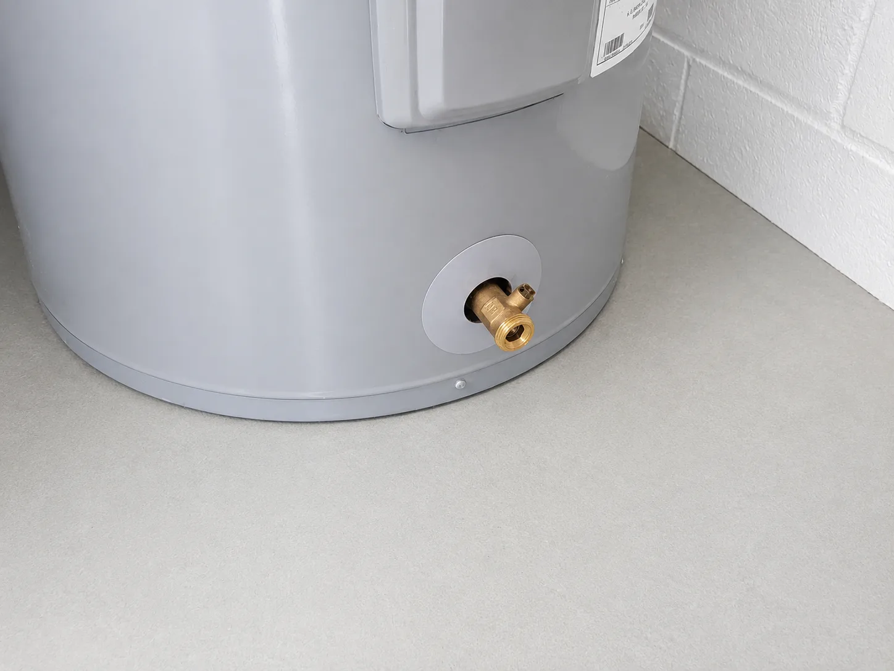
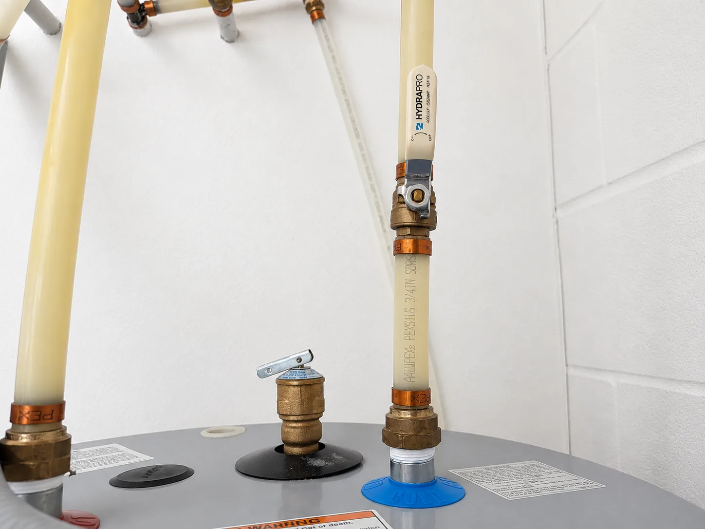
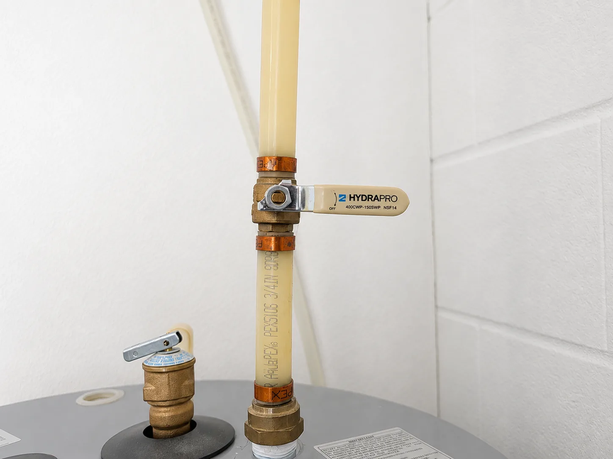
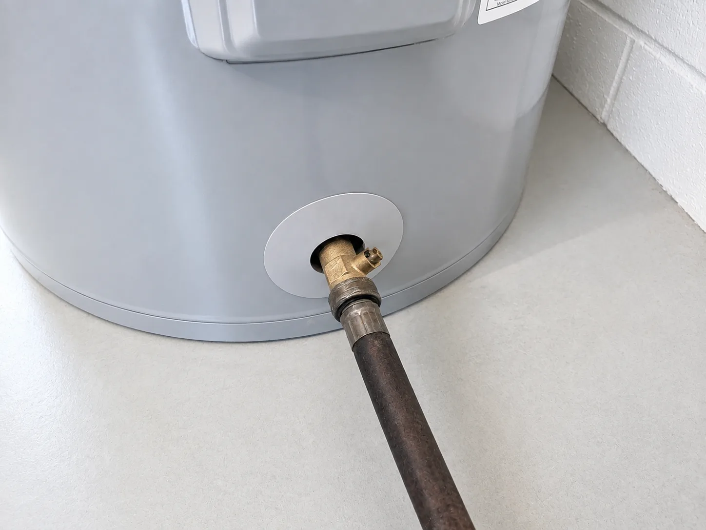
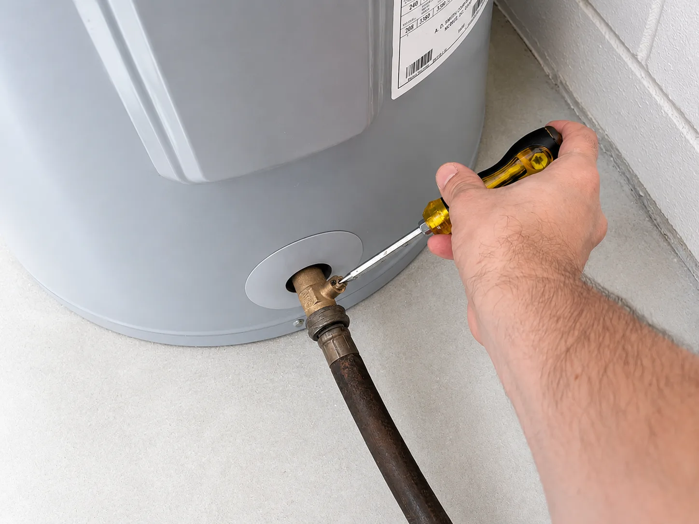
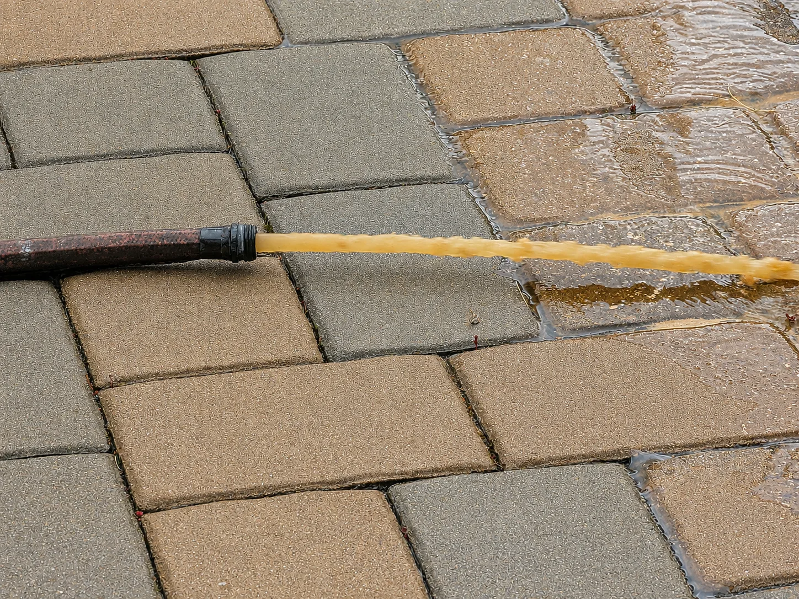
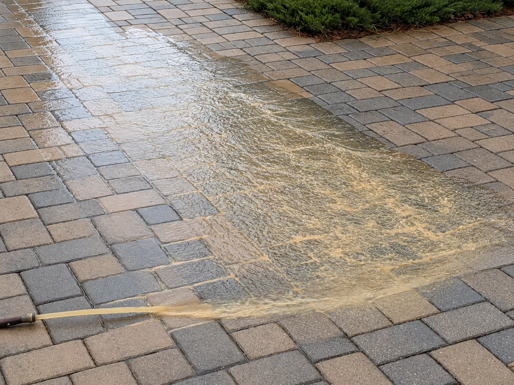
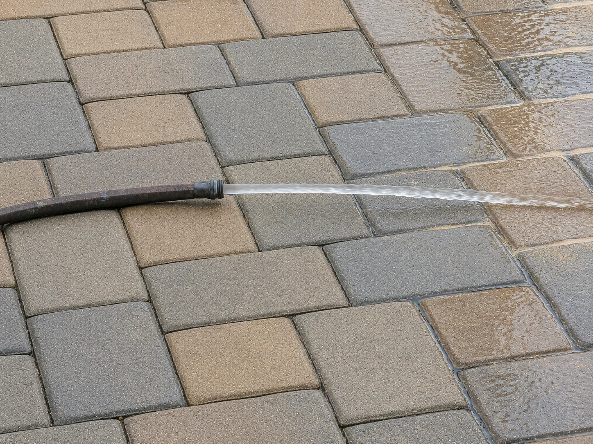
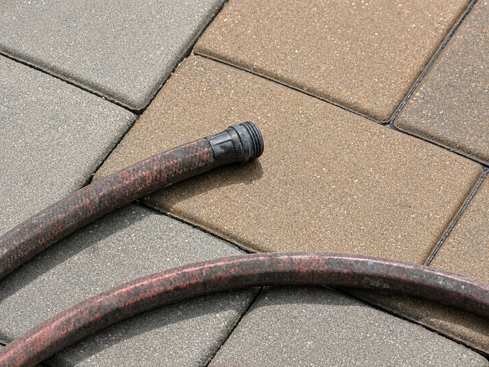

Flush the tank step by step
These are general instructions for the pictured electric tank heater. Your model's manual controls if its instructions differ. Stop and call a plumber if a valve is stuck, leaking, or clogged, or if you are not comfortable working near electricity and hot water.
-
Step 1
Confirm the heater type
Locate the water heater and read its label. This guide is for a conventional electric tank heater—not a gas, tankless, or heat-pump model. Find the manufacturer's instructions for your exact model before continuing.

Locate the tank and its drain valve near the bottom. -
Step 2
Turn off the breaker
At the electrical panel, switch off every breaker labeled for the water heater. Many electric heaters use a double-pole 240-volt breaker. Do not remove electrical covers or touch wiring.
-
Step 3
Let the water cool
Ideally, leave the heater off for several hours. You can also run a hot-water faucet for 10–30 minutes, until the water is no longer hot. Wear gloves and eye protection, and keep people and pets away from the hose outlet.
-
Step 4
Find the cold-water inlet
Identify the cold supply pipe entering the top of the tank. Confirm which valve controls it before changing anything. It is also wise to know where the home's main water shutoff is located.

The cold-water inlet is marked above the pictured tank. -
Step 5
Close the cold-water valve
Turn the inlet valve to the closed position. On the lever valve shown, the handle is closed when it sits perpendicular to the pipe.

Close the inlet so the tank does not refill while you begin draining. -
Step 6
Connect and route the hose
Thread a garden hose securely onto the drain valve near the bottom of the tank. Run the other end outdoors or to a suitable drain that can safely handle several gallons of water. Keep the hose downhill, unkinked, and away from anyone who could be burned.

Make the hose connection snug before opening the drain. -
Step 7
Open a nearby hot-water faucet
Open a hot-water faucet in the house and leave it open. This lets air enter the system and helps the tank drain. Do not use the temperature-and-pressure relief valve as a substitute.
-
Step 8
Open the tank drain
Use the valve handle or a flathead screwdriver, as appropriate for your model, to open the drain slowly. Check every connection for leaks and confirm that the discharge is going where intended.

Open the drain gradually; the valve style varies by heater. -
Step 9
Flush and watch for sediment
After the initial water drains, reopen the cold-water inlet to stir and flush the bottom of the tank. Monitor the discharge. Cloudy or discolored water and small particles are signs that sediment is being carried out.

Initial discharge may be cloudy or discolored. 
Watch the flow for particles and sediment. -
Step 10
Continue until the water clears
Keep flushing with cold water until the discharge looks clear and no sediment is visible. If little or no water flows, sediment may have blocked the valve; close it and call a plumber rather than probing the opening.

Clear, particle-free water indicates the flush is complete. -
Step 11
Close the drain and remove the hose
Close the tank's drain valve completely. Disconnect the hose carefully, empty the remaining water outdoors, and rinse the hose. Check the drain valve and surrounding floor for drips.

Drain and rinse the hose after disconnecting it. -
Step 12
Refill, purge the air, then restore power
Open the cold-water inlet fully. Keep the nearby hot-water faucet open until water flows steadily without sputtering, then let it run for at least three minutes. Check the drain valve for leaks. Only after confirming the tank is full should you close the faucet and turn the water-heater breaker back on.
Never restore power to an empty or partially filled electric tank.